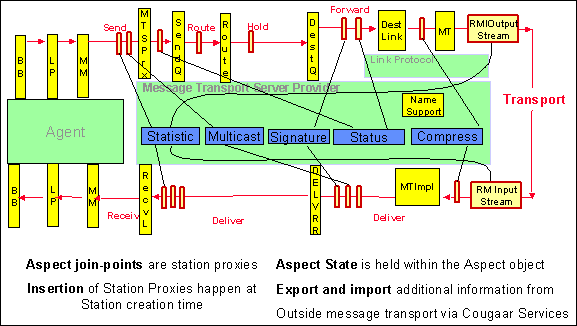

The principles of Aspect Oriented Programming (AOP) provide a perfect mechanism for extending and adapting the basic structure of the MTS, since the nature of such extensions is generally a cut across two or more structural components. In order to facilitate this use of AOP without depending on third-party code generators, the MTS includes a simple, limited implementation directly in Java that uses aspect instances to provide delegates for the various station interfaces. This implementation centers on classes, which implement the interface MessageTransportAspect, in particular, subclasses of StandardAspect. All the aspects described below are sublcasses of StandardAspect. Aspects are Cougaar Components and are loaded in the usual way. Some Aspects are also created explicitly in code.
The application of aspects to station and other instances is handled by the AspectSupport Service, available to all MTS Components. The order of aspects is important and will always follow the Component loading order. The explicitly created aspects always come before the aspects loaded as Components.
The application of aspects follows a simple pattern, using the MessageTransportAspect method getDelegate. After any "aspectizable" instance is created, whether by a factory or by any other means, each aspect in turn is given an opportunity to provide a delegate for that instance. The delegate, which will of course match the same interface as the original instance, will then take the place of the original instance or the previous delegate in the application of aspects. The final result is a nested series of objects matching the original interface whose innermost object is the original instance. The earlier an aspect appears in the global list of all aspects, the closer any delegate it provides will be to the raw instance for which the delegates are being provided.
One extra complication has arisen in the use of aspects. In some cases, proper nesting of send code with matching receive code requires that the order of aspects be reversed in the latter. In order to handle this, aspects are actually given two chances to provide delegates: once in the original aspect order, then again in the reversed order. The first opportunity is getAspect, described above. The second is getReverseAspect. In the second case, later aspect delegates will be closer the raw instance.
The following interfaces support aspects, in the sense that instances of these interfaces will always have aspect delegates attached immediately after instantiation: DestinationLink, DestinationQueue, MessageDeliverer, NameSupport, Router, SendLink, SendQueue. In addition, the RMILinkProtocol provides two other places in which aspects can be attached: the RMI server object; and the client-side stub for remote MT objects. These two present a problem for the getDelegate and getReverseDelegate calls, since in both cases the relevant delegate interface is MT.class. In order to distinguish these two, we use MTImpl.class in the getDelegate and getReverseDelegate calls on for the RMI server object, even though the delegates themselves need only match the interface MT. Finally, aspect delegates may be attached indirectly to serialization streams, which has the effect of converting a direct tcp connection into a series of Filter Streams (see org.cougaar.core.mts.MessageWriter and org.cougaar.core.mts.MessageReader).
Since most aspect delegates only want to provide a few methods of the given interface, rather than a complete reimplementation, we provide trivial delegating implementations for each of the station interfaces. In all cases, the names have the form {interface} DelegateImplBase. The aspect delegate classes should extend these and only have to provide the methods that are relevant to that aspect.
Here is a partial list of aspects in the Core MTS. The following figure depicts a few aspects and where they get attached to the message stations.

Figure: Message Transport Aspects Cross Cut Multiple Stations
Collects Agent State information.
Logs warnings if a message has been pending for too long.(default is 10 seconds)
Provides an example of adding trailers to serialized AttributedMessages. Stores a message attribute reflecting the validity of the message bytecount.
Tags all messages with a "send time" attribute when they enter the MTS SendLink.
Aspect to throw out a timed out message. Necessary for MsgLog et. al. Checks every thread in MTS for timed out attributes on a message: SendLink, Router, DestinationLink, ReceiveLink
Debugging and testing Aspect - logs a successful or failed message entry per stage of the MTS. This entry contains useful information about the message as well as time deltas between stages. Use BBN Adaptive Robustness's csmart/rules/debug_rules/messageTrace.rule. Or, simply configure the society configuration to include the MessageSendTimeAspect, MessageProtectionAspect, and the MessageTraceAspect along with this argument:
-Dorg.cougaar.core.logging.log4j.appender.MessageTrace.File = #{cip}/workspace/log4jlogs/#{node.name}.trace
This aspect adds simple statistics gathering to the client side OutputStream of RMI connections.
Implements the message watching functionality by attaching delegates to SendQueue and MessageDeliverer objects.
Multicast in the MTS is handled by this aspect.
Logs interesting fields of received messages, in tab-separated format; used for debugging Link Protocols
Provides a simple form of message-level security by enabling message signing. This is more of an example than a functional aspect.
Forces the LoopbackLinkProtocol to serialize all messages; used to debug serialization error.
Collects message transport statistics. This is used by the metric services PSP.
Logs data about messages as they move through the message transport stations. This is used for debugging the message transport.
Scrambles a message sequence; used to debug message transport.
Ensures that messages are delivered in right sequence.
Displays information about LinkProtocol addresses; used to debug LinkProtocols.
Provides a gui for "single-stepping" the sending of messages.
An example of using FilterStreams in RMI. This particular example adds a checksum to the end of the message. Adding trailers onto message serialization could also be used to sign a message.
Another example of using FilterStreams in RMI. This example compresses and decompresses message data on the fly.
By combining OOP and AOP, a simple and easily maintainable core design for message transport can be easily extended, either to provide new sorts of behavior altogether (e.g., new ,) or to adapt existing behavior in smart and dynamic ways (e.g. new Aspects), without compromising the simplicity of the core design. This is a significant win in every way. But the use of AOP in the MTS design is not a magic bullet: it won't eliminate every design problem that might ever arise, even if it greatly reduces the overall complexity.
In particular, considerable care is required when combining Aspects in previously untested ways. Aspects should usually be orthogonal to one another, and most of the current Aspects are. But even in this case, Aspect order can be very important. The user of a given set of Aspects needs to understand them well enough to choose a reasonable order at runtime.
When Aspects are not orthogonal, the interactions will of course become even trickier to handle properly (though not remotely as complicated as managing the same interactions would be in a monolithic design). In such situations, the lack of orthogonality needs to be examined very closly, since it may simply be an artifact of confused Aspect design. Non-orthogonal Aspects should be quite unusual, and as such can reasonably be expected to require special-case handling.